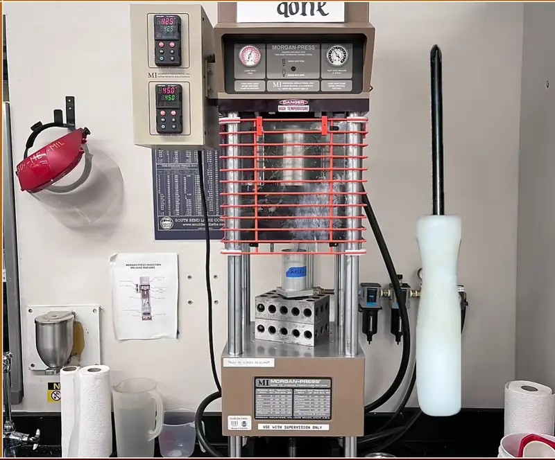

Injection Molded Screwdriver
A hands-on injection molding project producing a screwdriver-shaped polymer part with a Morgan-Press machine.

- Process
- Injection molding
- Equipment
- Morgan-Press
- Part
- Screwdriver
- Completion
- Fall 2024
Process
This project introduced injection molding alongside the machining, forging, and CNC work in my manufacturing coursework. The supplied project image documents the Morgan-Press setup and the molded screwdriver produced during the exercise.
Unlike the subtractive projects elsewhere in this portfolio, this part was formed in a mold. That made the manufacturing workflow less about individual cutting operations and more about the molding setup and producing a repeatable finished geometry.
Manufacturing takeaway
The project broadened my shop experience beyond metalworking processes and gave me a direct comparison between machining a part from stock and forming a polymer part through injection molding.